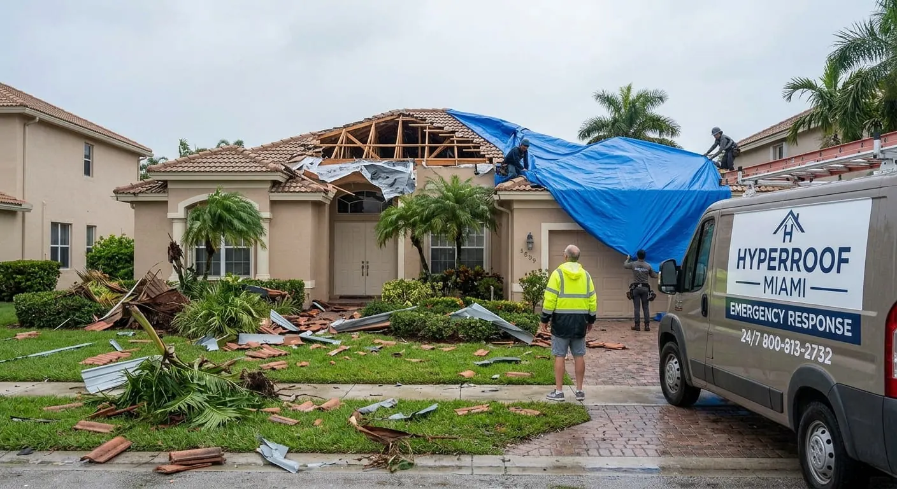
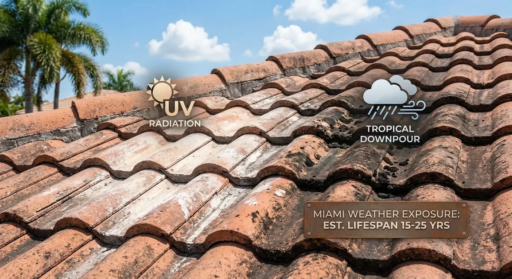
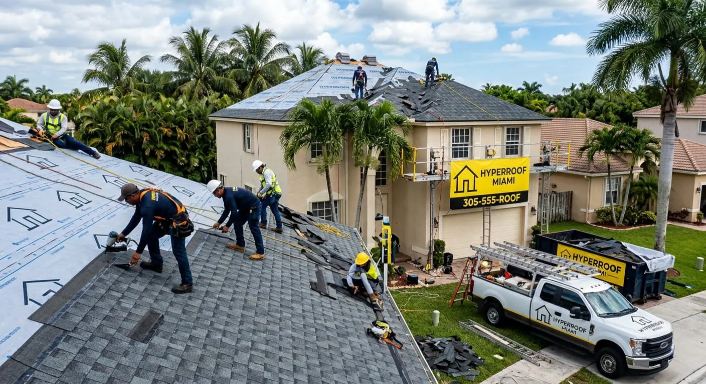
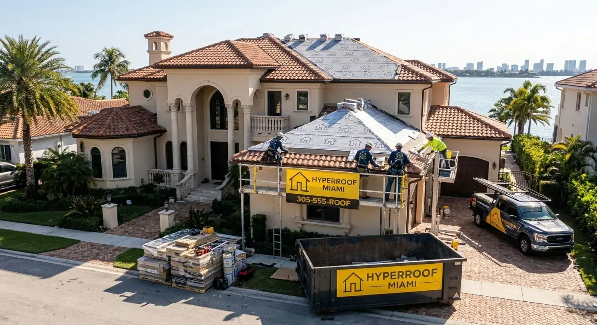
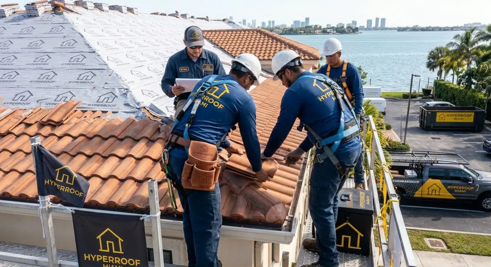
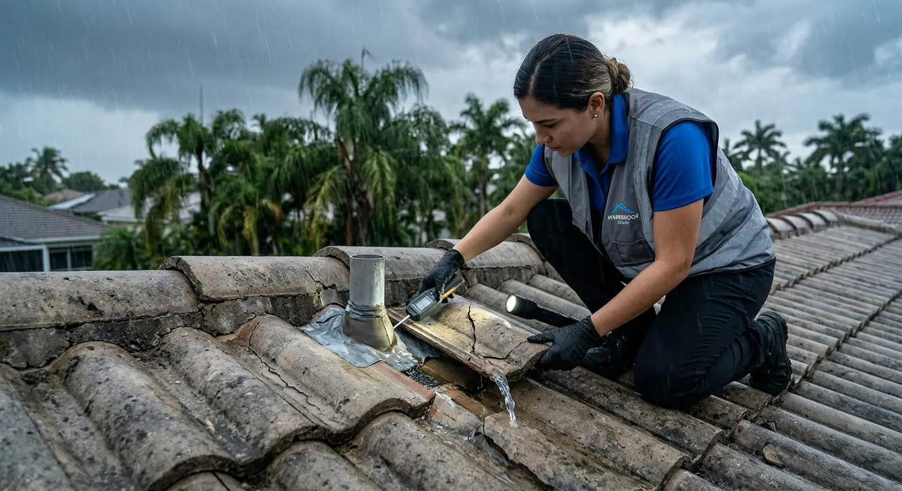
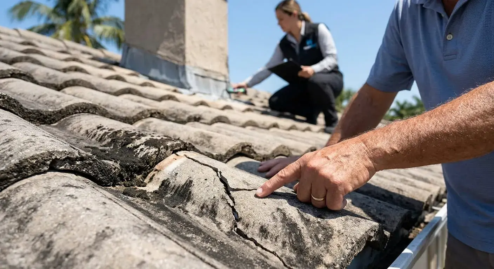
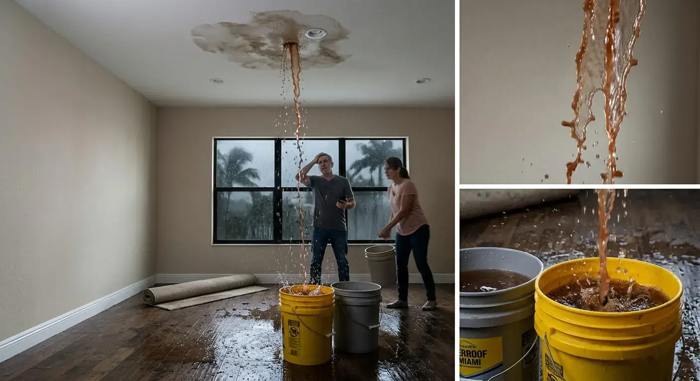

Roof Repair
Leaks, damaged shingles or tiles, flashing problems and other roof issues that may need targeted repair.

Explore independent information about roof repair, roof replacement, new roof installation, emergency roofing, inspections and commercial roofing. Learn how to compare options and evaluate roofing contractors in Miami-Dade County.
Leaks, damaged shingles or tiles, flashing problems and other roof issues that may need targeted repair.
Explore replacement options when an aging, heavily damaged or repeatedly repaired roof needs a larger solution.
Understand new roof installation options and the questions to ask before starting a project.
Get guidance for active leaks, exposed roofing materials and storm-related damage that needs prompt attention.
Roofing information for offices, retail properties, warehouses and other commercial buildings.

Hyper Roof provides independent information to help Miami property owners understand roof repair, replacement, storm damage, inspections and commercial roofing. The site does not currently accept estimate requests or dispatch contractors.
When you contact a roofing company directly, compare written estimates, materials, project scope, permits and warranty terms. Hyper Roof does not currently submit requests on your behalf.
Explore local roofing guidance for communities across Miami-Dade County, including repair, replacement, storm damage and inspection topics.
Hyper Roof provides independent roofing information. It does not currently accept estimate requests, dispatch contractors or perform roofing work.
Contractor licensing, insurance, workmanship, permits and service quality are the responsibility of the participating contractor.
Get clear roofing guidance, explore your options, and see examples of roofing work common in the Miami area.




Understand the main factors that affect roof replacement pricing, materials, labor, permits, and project scope in Miami.
Read the guide →
Learn the practical steps to protect your property, document damage, and arrange a professional roof assessment.
Read the guide →
See why routine inspections matter in Florida and what homeowners should check after severe weather.
Read the guide →A professional inspection can be useful at least annually and after major storms. The appropriate schedule also depends on roof age, material and condition.
Leaks, missing or damaged roofing materials, recurring repairs, visible deterioration, storm damage and an aging roof can all justify professional evaluation.
Miami properties commonly use asphalt shingles, concrete or clay tile, metal roofing and several types of flat-roof systems. Your property and applicable requirements should guide the final choice.
Prioritize safety, document damage when conditions allow, prevent additional water intrusion where appropriate and arrange a professional assessment. Avoid unsafe roof access.
Permit requirements depend on the project and jurisdiction. Ask the contractor to explain which permits apply and who will obtain them before work begins.
Project time varies with roof size, materials, weather, access, scope and permitting. A contractor should provide a written expected timeline with the estimate.
Hyper Roof provides information about active leaks and storm-related roof damage but is not an emergency dispatch service. Contact a qualified local provider directly for urgent assistance.
Explore roofing information and contractor-selection guidance for repairs, replacement, inspections, storm damage and commercial roofing. Hyper Roof does not currently accept estimate requests.
Explore Miami Roofing Services